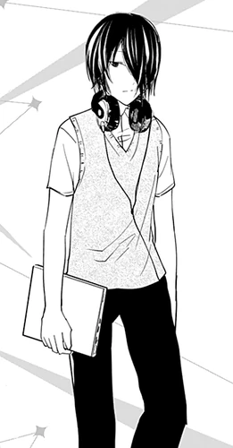

Yu Ishigami (石上 優いしがみ ゆう, Ishigami Yū) is one of the protagonists in the Kaguya-sama wa Kokurasetai series. He is a second-year high school student at Shuchi'in Academy, the Treasurer of the 67th and 68th Student Council, a former member of the Cheer Club and Culture Festival Committee, and the Vice President of the 69th Student Council.
| Yu Ishigami | |
|---|---|
| Manga | Anime |
|  | |
| Profile | |
| Age | 16 |
| Birthday | 3 March |
| Gender | Male |
| Eye Color | Dark Blue |
| Hair Color | Dark Blue |
| Height | 169 cm |
| Personal Status | |
| Occupation | High School Student
Student Council Treasurer |
| Grade | Junior (2-A) |
| Portrayal | |
| Japanese VA | Ryouta Suzuki |
| English VA | Austin Tindle |
| Debut | |
| Manga | Chapter 24 |
| Anime | Episode 6 |
Yu is based on Isonokami no Maro (石上 麻呂), the fifth suitor from The Tale of the Bamboo CutterHis depressed personality is based on the fact that his counterpart attempted to obtain a cowry shell from a swallow's nest, only to fall to his death with bird poop in his hand.
Yu is a good-looking, albeit gloomy, teenage boy of a slim build with chin-length black hair that covers the left side of his face; he typically wears a dull expression further amplified by his black eyes.
In the past, Yu described himself as being a jock. He had an athletic build and short hair that resembled Tsubasa Tanuma's. However, years of inactivity led him to lose his muscle.
Yu is a reserved and somewhat gloomy student who would rarely show up to the student council meetings, preferring to do most of his work at home. He normally spends most of his time playing video games by himself, as he is generally be disliked by the other students due to an incident that occurred in his past.
Yu has an incredibly cynical and depressing outlook on life, often going on long rants against youth and the other students who he refers to as “normies”. This discontent very obviously comes from his own misery and loneliness as he seems very jealous of the guys who are popular and manage to get themselves a girlfriend. Yu can be quite awkward at times, making statements that cause others to see him as a creep. That being said, he is quite snarky and is often the one to make sarcastic remarks pertaining to the situations he gets in.
Despite his negative attitude, Yu is a kind and well-meaning student who suffers from an inferiority complex and he is ultimately willing to help others in need, even if it means sacrificing his own pride, and even advised Kaguya Shinomiya to not associate herself with him simply because it may lower her reputation
Yu enjoys playing video games and reading manga. He also has wide knowledge about otaku culture, such as how mangaka or anime production works, as well as manga tropes. Despite this, he hides the fact that he is into anime due to a fear of being called an otaku and only ever discussed it with Miyuki Shirogane. He also listens to anime music.
Yu is the second son of the president of a small toy company who was able to enter Shuchi'in Academy thanks to the hard work of his father and is the only one that has a high school degree. Not academically driven, he can only put his effort into things that interest him. He possesses exceptional observational skills. However, this causes him to notice the things that other people are most insecure about; landmines people do not want to be touched on deep in the bottom of their hearts. These insecurities that other people hide are as clear as the clothes they wear to him.
He avoids obvious taboos that no ordinary person would dare to touch, but the observations he makes are not always immediately obvious to him as being landmines. He frequently disturbs and sets off these landmines because he cannot tell that they are, in fact, untouchable landmines. He used to skip school as a matter of habit, but Miyuki Shirogane scouted him for treasurer as soon as he entered high school, forcing him to attend.
In chapter 222 of the manga, Chika reveals that she played piano because she wanted to be perfect, and she becomes a prodigy at the piano. The expectations of her family and her fans rose, forcing her to practice more. She quit piano after Kaguya told her to just quit if she didn't like the piano. Soon after, Chika challenged Kaguya to a game battle and if she won, she would get to become Kaguya's friend. In the end, she becomes Kaguya's first friend.
He had beaten up Ko Ogino, the president of the drama club for not stopping his acts of cheating on Kyoko Ōtomo back in middle school. In desperation, Ko framed Yu for beating him up because he was jealous of having Kyoko as a girlfriend, this has led to widespread rumors and flooding hate from people, as well as a long-term suspension that did not end until he wrote an apology. The hate from all the people, the suspension, and the effect of this on his familial relationships at home led to his self-confidence and self-esteem being replaced by misery and negativity. And in the end, he was never able to write an apology letter because he wouldn't let himself do it. Miyuki had investigated and had discovered the truth about his suffering and was the only one to understand and believe that he was not at fault. He was recruited for the student council soon after for his data analysis and processing skills.
As mentioned in the anime, Yu was the fastest member in the track club.
At some point, under pressure to participate in school club activities, Yu decides to join the Cheer Club, captained by his senior Kazeno. It is in the Cheer Club that he first comes across Tsubame Koyasu, an upbeat third-year student that is kind to everyone and he considered her to be one of the prettiest girls in the school, alongside Kaguya Shinomiya. Yu develops a crush on Tsubame that he inadvertently confesses his feelings for her at the school's cultural festival. Yu does not realize that his actions were perceived as a confession by the rest of the student body and is therefore oblivious to the implications of having given Tsubame a heart-shaped gift (considered akin to a confession in Shuchi'in tradition). After some convincing by Kaguya, Tsubame decides to seriously consider Yu's confession, with her original intention being to let him down as gently as possible. It isn't until Yu watches Tsubame's performance of the traditional play that gave rise to the aforementioned tradition that he realizes his actions had unintended meaning. Even then, Yu's thickheaded nature prevented him from recognizing the full meaning of his actions: a straight confession.
The name Yu means "excellence, superiority, gentleness" (優). Yu's surname Ishigami means "stone, volume measure" (石) (ishi) and "above, top, upper" (上) (kami/gami).